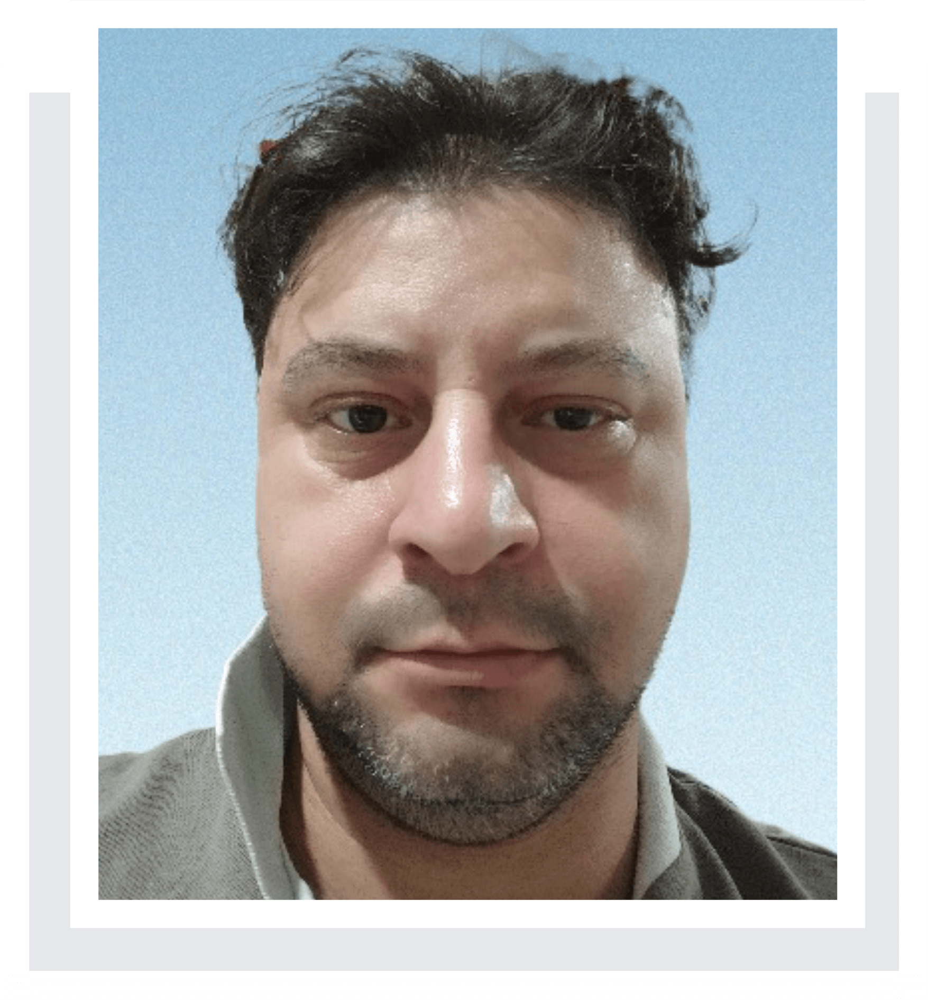
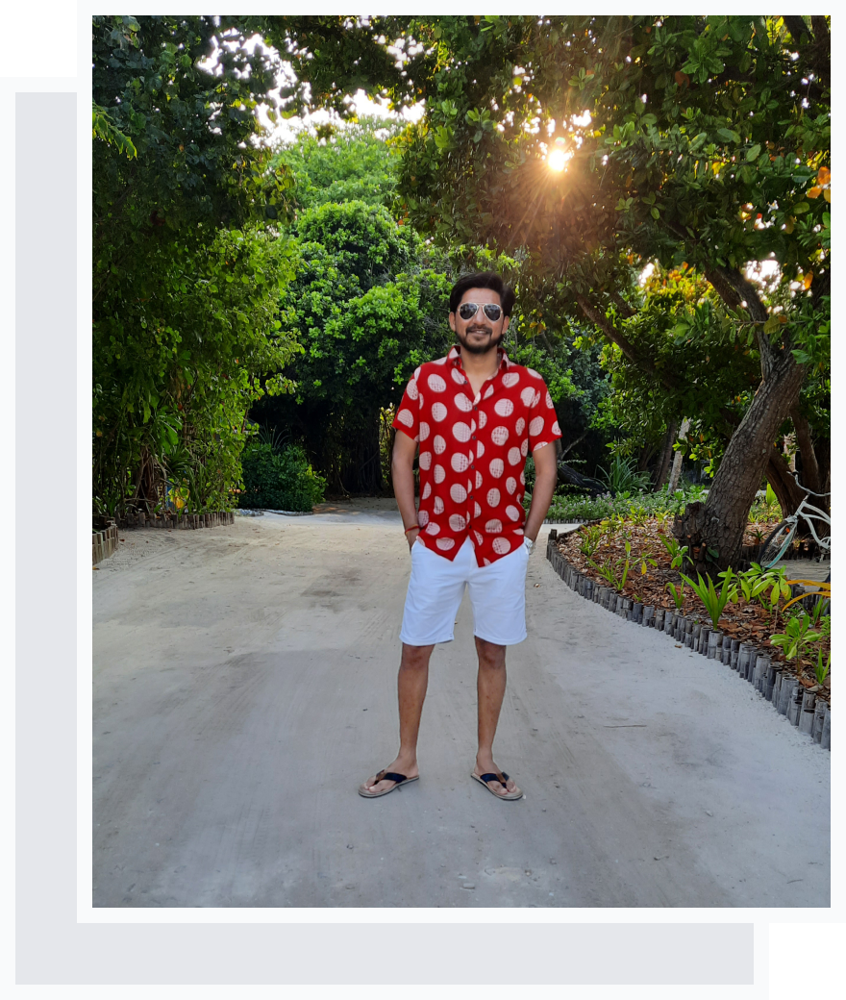
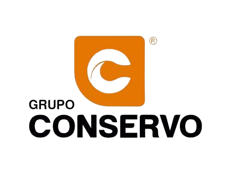
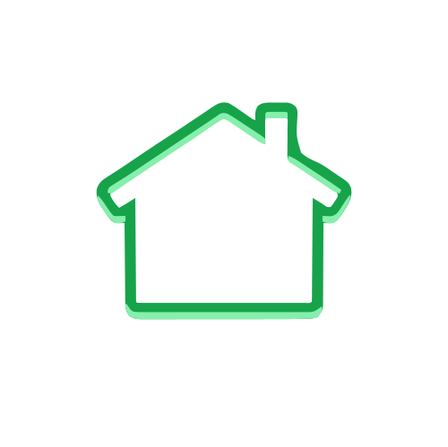

Olá, eu sou o Wanderson 👋
Sou estudante de Ciência da Computação na Estácio de Sá.
Eu enfrento uma deficiência física, Ataxia Hereditária Não Especificada (Código CID-10 G11.9), que me motivou a transformar desafios em oportunidades de crescimento. Essa experiência me ensinou resiliência e determinação, qualidades que considero fundamentais no campo da tecnologia.
Tenho experiência prática em várias linguagens de programação, incluindo C#, JavaScript e TypeScript. Além disso, possuo conhecimento de frameworks modernos como React, Angular, Express.js e Nest.js. Meu background acadêmico e cursos especializados complementam essas habilidades técnicas.
Estou sempre procurando melhorar minhas habilidades e estou pronto para enfrentar novos desafios. Minha jornada não é apenas sobre superar limitações, mas também sobre redefinir o que é possível no mundo da tecnologia.

Habilidades
As habilidades, ferramentas e tecnologias que eu domino:
Sobre mim:

Curioso sobre mim? Aqui está:
Eu enfrento uma deficiência física, Ataxia Hereditária Não Especificada (Código CID-10 G11.9), que me motivou a transformar desafios em oportunidades de crescimento. Essa experiência me ensinou resiliência e determinação, qualidades que considero fundamentais no campo da tecnologia.
Sou um desenvolvedor apaixonado e autodidata, especializado em desenvolvimento full stack com Angular e Node.js e um pouco de Net Core. Tenho grande entusiasmo por trazer à vida os aspectos técnicos e visuais dos produtos digitais. A experiência do usuário, o design pixel perfeito e a escrita de código claro, legível e altamente performático são aspectos que valorizo muito.
Iniciei minha jornada como desenvolvedor em 2012 com Net Framework, desenvolvendo pequenos programa para minha LanHouse. Comecei como desenvolvedor web em 2022 durante o curso pela Cubos Academy, e desde então, continuo crescendo e evoluindo, enfrentando novos desafios e aprendendo as tecnologias mais recentes.
Agora, na casa dos trinta e oito anos, dois anos após começar minha jornada no desenvolvimento web, dou início ao curso de Ciência da Computação, enquanto sigo construindo aplicações web de ponta usando tecnologias modernas como Angular, TypeScript, Nestjs, TailwindCSS, Supabase e muito mais.
Sou um pensador progressivo e gosto de trabalhar em produtos de ponta a ponta, desde a ideação até o desenvolvimento.
Quando não estou no modo desenvolvedor, estou aproveitando meu tempo livre. Acompanhe meu trabalho no GitHub.
Finalmente, alguns detalhes rápidos sobre mim.
- E. Ciência da Computação
- Desenvolvedor Full Stack
- Aprendiz ávido
- Resiliente
Obrigado por ler!
Experiências
Aqui está um resumo rápido das minhas experiências mais recentes:

Estágio - Desenvolvimento de chatbot
- Experiência como estagiário em desenvolvimento de chatbots na Blip, utilizando o Blip Builder para criação, configuração e manutenção de fluxos conversacionais inteligentes. Durante o estágio, participei da definição de jornadas de usuários, integração com APIs externas e implementação de soluções automatizadas para atendimento e suporte.
Aprendiz - Suporte ao Cliente SMB
- Eu faço parte da equipe de CS platform na Blip, onde sou responsável por gerenciar e atualizar o conteúdo do portal de Ajuda da Blip.
- O portal de Ajuda da Blip serve como a principal fonte de documentação para clientes e parceiros que utilizam nossas ferramentas e extensões para chatbots.
- Eu colaboro com outras equipes para garantir que nossa documentação reflita as últimas atualizações dos produtos e serviços da empresa.

Porteiro
- Responsável pelo controle de acesso de pacientes e acompanhantes em um unidade de pronto atendimento.
- Lá, consegui desenvolver habilidades socioemocionais, como empatia, comunicação eficaz, resolução de conflitos, Gerenciamento do estresse, flexibilidade e adaptabilidade, trabalho em equipe e autocontrole para lidar com o público e situações tensas dentro da unidade.

Co-proprietário de lan house
- Tratei da configuração e reparo de computadores e da rede LAN na lan house.
- Ofereci serviços de instalação e manutenção de computadores para clientes em suas residências.
- Forneci serviços baseados na internet, como impressão de boletos, redes sociais e criação de currículos.
Projetos
Alguns dos projetos notáveis que eu construí:

Frontend Dindin 2.0
Mais um desafio da Cubos Academy concluído com sucesso!
Este projeto em particular era para ser desenvolvido em dupla, mas devido a imprevistos, meu parceiro não pôde participar. Em vez de desanimar, decidi encarar isso como uma oportunidade única de me desafiar como um verdadeiro desenvolvedor fullstack.
E não é que deu certo? Consegui finalizar o projeto em tempo recorde: apenas 7 dias!
Assumir a responsabilidade de desenvolver tanto o backend quanto o frontend sozinho foi desafiador, mas extremamente gratificante. A sensação de ver o projeto finalizado, sabendo que cada linha de código foi escrita por mim, é indescritível!

Instalador da tradução para FinalFantasyXIII
Desenvolvi um instalador utilizando .Net Core com C#, Winforms e Blazor.
Esse instalador será utilizado para baixar o pacote de tradução e inseri-lo no jogo Lightning Return Final Fantasy XIII. Este projeto foi administrado por mim em uma comunidade de tradutores voluntários.
Ao utilizar o Blazor, pude criar um design moderno aproveitando a praticidade do HTML e CSS.
Foi a minha primeira experiência com o Blazor e fiquei muito satisfeito com o resultado!
Testemunhos
Coisas legais que as pessoas disseram sobre mim:
Wanderson se destacou desde o início do contato que tivemos na Blip. Suas habilidades técnicas em programação denotam a pessoa dedicada que ele é, que de fato coloca a aprendizagem ao longo da vida em prática. O site ficou incrível, nível especialista no assunto! Parabéns!
Wanderson, faz parte da squad blip help e desde que chegou, tem contribuído com as atividades da área, atuando na tradução dos artigos, revisão, apoio aos clientes no canal telefônico. É um profissional curioso, prestativo, comprometido com suas atividades e se empenha ao máximo para entregar o que é solicitado com qualidade. Além de atuar com agilidade em suas demandas.
Wanderson é muito prestativo! Tudo que solicitamos ele consegue executar com facilidade e muita agilidade. Ele com certeza é um diferencial dentro do time!